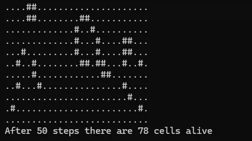

Conway's Game of Life
This demo implements Conway's Game of Life using the ndarray_cg crate. It demonstrates cellular automaton simulation with efficient grid-based computation, showcasing emergent complexity from simple rules.
✓ Has Showcase